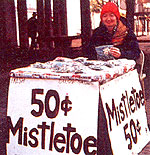
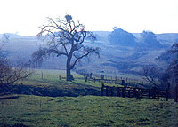

Cold cash really does grow on trees-but you have to be willing to go out on a limb for it.
Last December, I earned $525 in just 12 days selling mistletoe here in Eugene, Oregon. And since this popular holiday symbol grows wild in many parts of the country and can usually be gathered for free, chances are you can do at least as well marketing mistletoe in your own community. Furthermore, now is the perfect time of year to lay the groundwork for your holiday business.
Of course, first you'll need to make sure there's enough mistletoe in your area. Drive around and look for the distinctive ball-like clusters of green or yellow-green foliage nestled among the bare branches of deciduous trees. Mistletoe (genus Phoradendron) is a semiparasite that prefers to freeload on oaks but also appears on such other hardwoods as sycamores, black gums, maples, walnuts, and elms. Botanists classify mistletoe as a semi parasite because, although it thrusts its roots into the host tree for water, it manufactures and uses its own chlorophyll.
Besides simply locating mistletoe, you'll need to consider its accessibility-the plant, you'll soon discover, has an annoying affinity for heights. Although you may have the extraordinary luck to find it growing in easytoclimb scrub oaks, the greater likelihood is that most clusters will be perched amidst the topmost branches of tall trees. So make a special note of any locations that offer particularly easy picking. And, of course, be sure to get permission to harvest any mistletoe that's on private property. (This is seldom a problem. In fact, because the parasite can, if present in large quantities, actually kill the tree it lives on, some landowners will pay to have the stuff removed!)
Now comes the hard work. Wear appropriate clothes and shoes for climbing trees, and bring along a few trash bags or card board boxes for collecting your bounty.
The traditional southern method for harvesting mistletoe is to blast it out of the tree with a shotgun. I don't recommend this approach; not only are shotgun shells expensive, but the shot itself can damage both the tree and the plant. Mistletoe is fragile, and you'll sell more if the boughs you gather are intact.
The best tool I've found for collecting mistletoe is a long pole with a hook mounted on one end. Store-bought pruning poles work nicely, but you can make your own: Get several strips of 1"-wide lumber-wood that's light enough to handle, yet sturdy enough not to flop over when hoisted high. Drill a hole an inch or two in from one end of each of the strips, and then join the sections with 1/4" bolts and nuts. Assembled, the pole should be about 12 to 20 feet long-anything longer will be awkward to maneuver. You can make the hook, which of course is used to dislodge the mistletoe, by simply driving a long nail into one end of the pole and then bending the spike over. (The curved blade from a linoleum knife will work, too.) To transport the pole, just loosen the nuts and fold it down, like a carpenter's ruler.
For really tall trees, you'll need a long ladder. And if you intend to do much harvesting, you may want to get yourself a partner. One person can climb the tree and the other can steady the ladder, hand the pole up, and catch the clumps of mistletoe as they fall. (Again, remember that the plants crush easily. Place them carefully in your bags or boxes, and don't stack the containers on top of one another.)
As you work, try to be selective about the plants you harvest. Mistletoe grows in both male and female forms-the latter plants are the most desirable, because they bear attractive, whitepink berries. (These usually ripen sometime in December.) From the ground, it's often hard to tell the difference between male and female plants, or even between leafy, attractive clumps and those that are mostly stems. Leafy mistletoe with berries is better, not only because it's more appealing visually and therefore easier to sell, but also because it will fill more bags-netting more money for your efforts. If your mistletoe comes up short of berries, you can mix male and female plants together in one spray or package. Some people actually prefer to buy unberried clusters, because the tiny white fruit will eventually fall off and make a mess, and because the fruit is, after all, poisonous (something for parents and pet owners especially to consider). Still, I've found that most people want those berries, regardless of the drawbacks.
Mistletoe, like any plant, will begin to dry once it's picked. Commercial dealers spray their wares with a preservative to keep them freshlooking, but I think a far better way is to harvest only as much as you can sell within a few days, and then gather more when you need it. If you keep the foliage moist (but not wet) and package it properly, it'll retain its festive appearance nicely.
I've found that plastic sandwich bags-the kind with built-in zippers-make effective packages for mistletoe (people want to see what they're buying!). Since the containers create an airtight seal, though, it's important to punch air holes in them, or water vapor will be trapped inside and the sprigs will become moldy. To prepare many bags quickly, just drive a few nails into a board and then impale the sacks on the spikes. Instant ventilation!
As you package your product, keep your customers in mind-try to make each parcel as attractive as possible. Break the clumps you've gathered into small branches, setting aside any particularly nice-looking sprays. Then fill the bags, making sure to include one good spray and several thinner sprigs in each one. Occasionally, I'm able to buy colorful stick-on bows for just a few pennies apiece-the decorations, either attached to the outside of the bags or stuffed inside, really boost sales. Don't crowd the mistletoe, though-and don't even bother with such embellishments unless you can buy them at a bargain rate that won't cut into your profits.
Naturally, it's hard to say how much mistletoe you should package for your first day of selling, but I'd recommend at least a couple of hundred bags. Your sales will depend largely on your location and your price. Here in economically depressed Eugene, I ask only 50 cents a bag, and can easily move 100 bags on a good day. Yet the same bag in New York City would probably move well at $2.00 or more. If your sales are slow, cut your price.
Since mistletoe is an impulse item (people don't think of buying it until they see someone selling it), the best locations are wherever there's plenty of foot traffic. My downtown mall "store" cost only $10 for a partial month's rent. The booth itself doesn't have to be elaborate (I just set up a card table and threw a tablecloth over it), but you do need to make sure you and your product are visible. My posterboard banners proclaim Mistletoe 50 cents . . . Fresh, Organic, Oregon-Grown! . . . and Do Your Lips a Favor! (Since the booth was outdoors, I bundled up in appropriate cold-weather gear-and discovered that looking somewhat chilled helped generate sales and tips!)
Actually, there are any number of other ways to market mistletoe. If there's a college campus near you, try peddling it door-to-door to fraternities and sororities. Or if selling outdoors doesn't appeal to you, take your packaged mistletoe to retail stores and offer it to them on consignment. Also, florists and grocers will sometimes buy bulk mistletoe at wholesale-but I've found that the profit's better when I sell direct. (Besides, I get to meet more people that way.)
Whichever methods you choose, and however big or small your business may be, I think you'll find-as I have-that marketing mistletoe offers a multitude of rewards. Not only do you make extra money for the holidays, but you also get to make the season a bit merrier for other folks. And you get to hang plenty of mistletoe around your own house, so that you, too, can observe one of humankind's more enjoyable traditions!
EDITOR'S NOTE: For more tips on gathering and selling this holiday plant, see "The Mistletoe Game" in MOTHER N0. 30. You may also want to read about the fascinating legends and lore associated with mistletoe, in MOTHER's Herb Garden, issue 66.
|
 |
|
 |